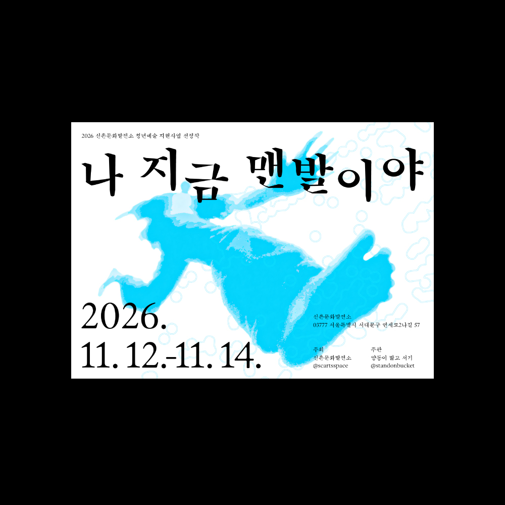
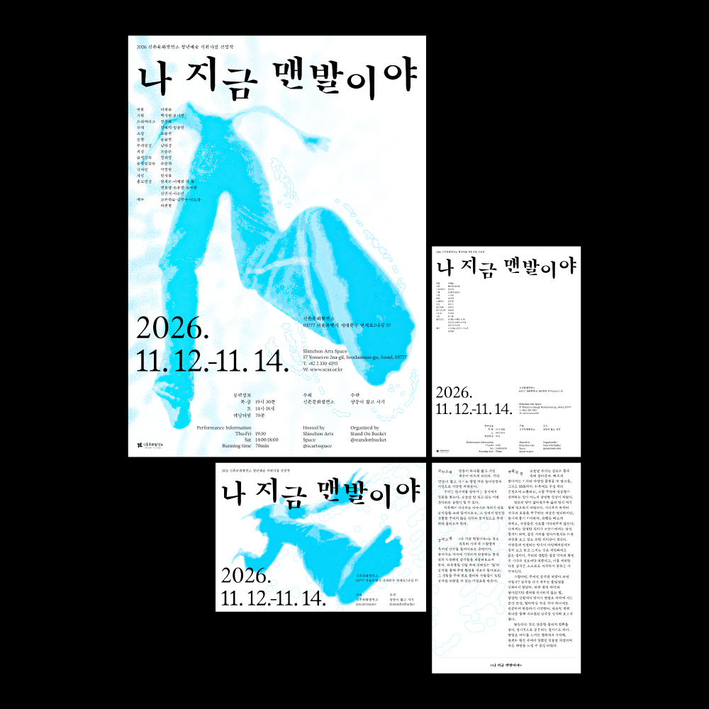

공연 «나 지금 맨발이야»
그래픽 디자인, 2026
«나 지금 맨발이야»는 정보 과부하 시대 속 사람들의 무뎌진 감각을 들여다보는 공연이다. 쏟아지는 자극에 기민하게 반응하는 동안 점차 익숙해진 감각들을 되살려보고자 한다. 하루종일 신발 속에 갇혀있는 ‘발’의 감각을 통해 주변 환경을 새로이 돌아보고 그 경험을 무대 위로 불러와 사람들이 잊힌 감각을 되찾을 수 있는 이정표를 만든다.
연출 / 이해솔
기획 / 백지원, 오다영
드라마터그 / 정주희
무대 / 김예지, 임종민
조명 / 오유빈
음향 / 송유빈
무대영상 / 남하경
의상 / 조송은
음악감독 / 정하영
움직임감독 / 손승하
그래픽 디자인 / 박정빈
사진 / 한서윤
홍보영상 / 엄세은, 이채림, 리 욱, 전호영, 조유정, 조아영, 김민서, 이수빈
배우 / 고은하늘, 김찬우, 이도경, 하원철
멘토링 / 김제민
조명 어시스턴트 / 김은우, 이재환
Performance «I'm Barefoot Right Now»
Graphic Design, 2026
«I'm Barefoot Right Now» is a performance that explores the dulled senses of people living in an age of information overload. It seeks to revive the senses that have gradually become numb as we react swiftly to a constant barrage of stimuli. Through the sensations of the “feet”—which are confined inside shoes all day long—the performance offers a fresh perspective on our surroundings and brings that experience to the stage, creating a roadmap for people to rediscover their forgotten senses.